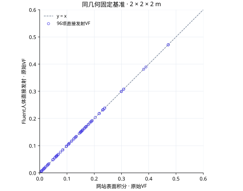
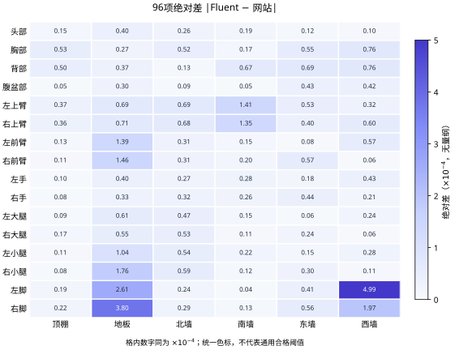
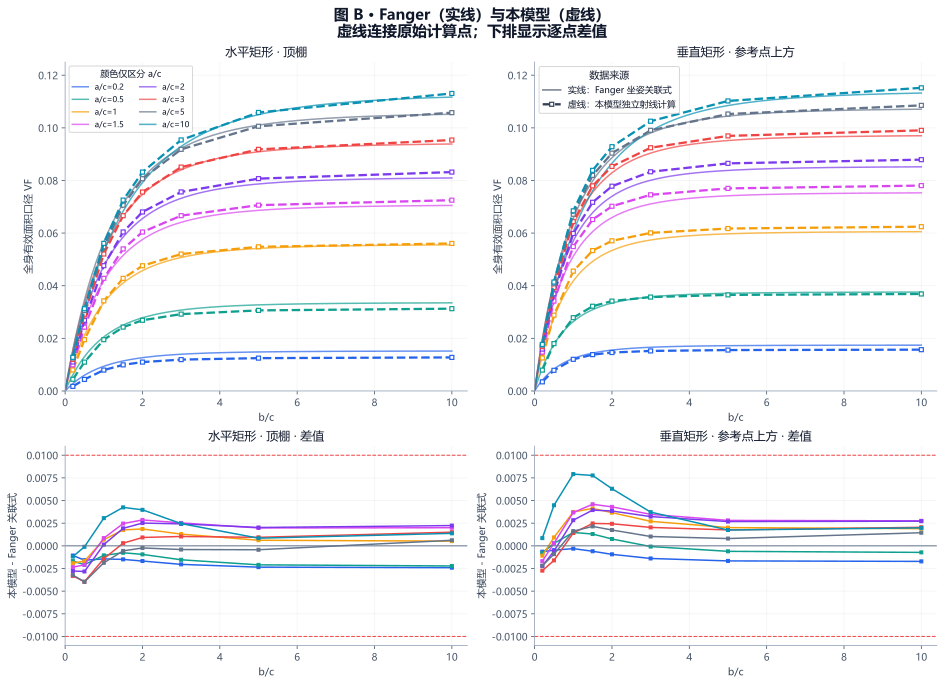
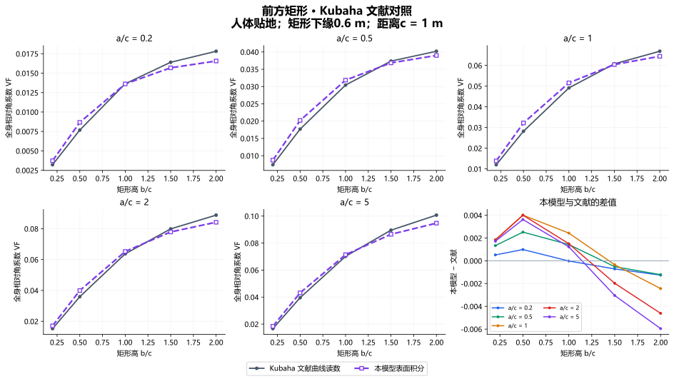
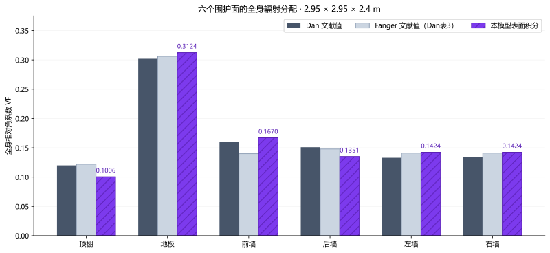
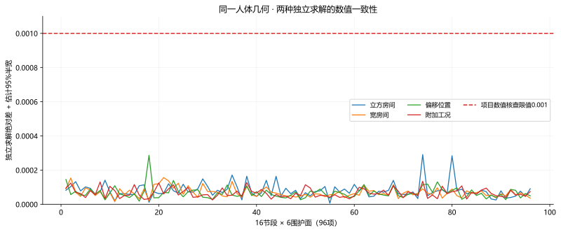
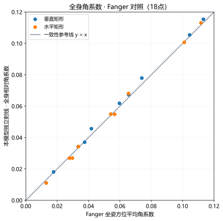
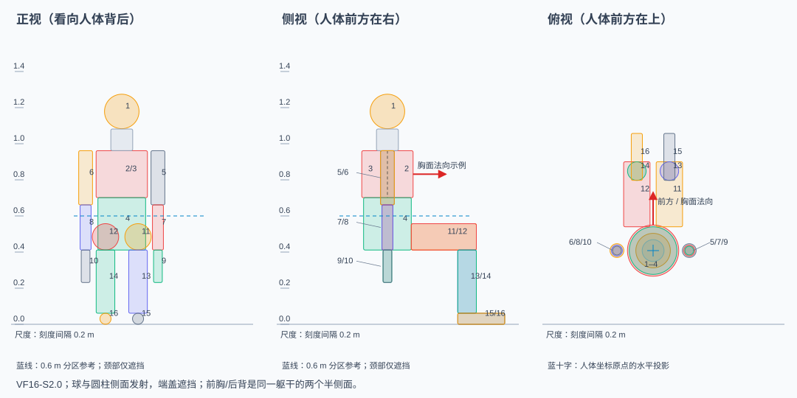
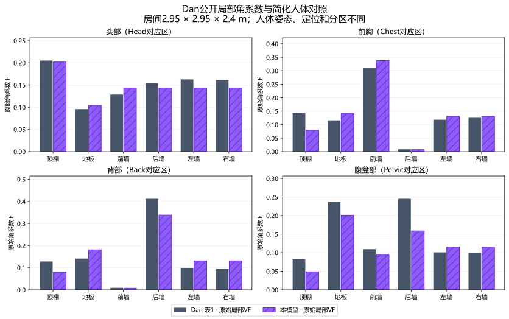

人体辐射计算 · 验证记录
VF16-S2.0 简化坐姿人体 · 1019版 · 证据更新于2026年10月19日
已有证据支持什么？
针对VF16-S2.0简化坐姿人体，本工具已完成全身文献对照、同几何独立数值校核，以及16节段Fluent固定基准交叉对照。现有证据支持在已验证范围内分析室内辐射分配，并比较同一人体模型下的设计方案。
“人体局部节段”指发射端的头、胸、四肢等分区；“接收面局部区域”指窗、板面等子区域。两者的验证范围分别列示。
| 证据 | 计算量与对象 | 参考条件 | 比较方式 | 结论与范围 |
|---|---|---|---|---|
| Fluent固定基准 | 16节段 → 六个整面 | 2 m立方房间，居中朝北 | 同几何、独立软件，直接发射方向 | 96项通过项目经验筛查 |
| 同几何独立数值 | 节段 → 整面及局部矩形 | 登记房间、矩形位置、近接触区域 | 独立射线参考，附估计95%半宽 | 已登记记录通过；不合计重叠样本 |
| 全身文献 | 全身环境相对份额 → 参考矩形/六面 | Fanger / Kubaha / Dan各自工况 | 关联式、读图值或文献表值 | Fanger、Kubaha接近；Dan保留差异 |
| 一致性检查 | 原始VF、区域合并、等温MRT | 已列数学、物理与输入检查 | 闭合、可加性、对称性、等温性 | 支持实现一致性；不是实测舒适性验证 |
这些证据属于不同定义与工况，不换算为“正确率”，不合并成一个准确度指标。用户当前输入的工况没有因此自动获得独立软件复算。
Fluent · 16节段到六个整面
固定条件：2 × 2 × 2 m房间；人体参考轴位于水平坐标(1, 1) m，脚底贴地、朝北。使用同一人体定义，颈部与柱体端面仅遮挡。比较量为人体直接发射的原始面积角系数，六面不归一化。
2026-10-18计算，最终列为细网格R40。采用人体直接发射方向；SIF对应量未通过，脚部与网格限制保留。本组覆盖六个整面，不直接验证任意窗、局部板面或热舒适。



逐项对照
带符号差 = Fluent − 网站；相对差 = 绝对差 / |网站VF|，分母为0时显示“—”。表内显示8位小数，CSV保留原始精度。组合量含最近角分辨率变化、网格变化和源闭合项，筛查公式与阈值见方法。
| 节段 | 接收面 | 网站VF | Fluent直接VF | 带符号差 | 绝对差 | 相对差 | 单项阈值τ | 差值＋精化＋闭合 | 经验筛查 |
|---|---|---|---|---|---|---|---|---|---|
| 头部 | 顶棚 | 0.20373665 | 0.20372148 | -0.00001517 | 0.00001517 | 0.007% | 0.001000 | 0.00002467 | 通过 |
| 头部 | 地板 | 0.04801087 | 0.04805042 | 0.00003955 | 0.00003955 | 0.082% | 0.001000 | 0.00009273 | 通过 |
| 头部 | 西墙 | 0.15669483 | 0.15668484 | -0.00000999 | 0.00000999 | 0.006% | 0.001000 | 0.00005058 | 通过 |
| 头部 | 东墙 | 0.15669483 | 0.15668259 | -0.00001224 | 0.00001224 | 0.008% | 0.001000 | 0.00003023 | 通过 |
| 头部 | 南墙 | 0.15783396 | 0.15781507 | -0.00001889 | 0.00001889 | 0.012% | 0.001000 | 0.00003648 | 通过 |
| 头部 | 北墙 | 0.15783396 | 0.15780758 | -0.00002638 | 0.00002638 | 0.017% | 0.001000 | 0.00005978 | 通过 |
| 胸部 | 顶棚 | 0.06370596 | 0.06375936 | 0.00005340 | 0.00005340 | 0.084% | 0.000637 | 0.00013899 | 通过 |
| 胸部 | 地板 | 0.07628298 | 0.07630969 | 0.00002671 | 0.00002671 | 0.035% | 0.000763 | 0.00013054 | 通过 |
| 胸部 | 西墙 | 0.14966748 | 0.14959136 | -0.00007611 | 0.00007611 | 0.051% | 0.001000 | 0.00015063 | 通过 |
| 胸部 | 东墙 | 0.14966748 | 0.14961229 | -0.00005518 | 0.00005518 | 0.037% | 0.001000 | 0.00012888 | 通过 |
| 胸部 | 南墙 | 0.00833647 | 0.00835299 | 0.00001652 | 0.00001652 | 0.198% | 0.001000 | 0.00006054 | 通过 |
| 胸部 | 北墙 | 0.38105112 | 0.38099939 | -0.00005173 | 0.00005173 | 0.014% | 0.001000 | 0.00022222 | 通过 |
| 背部 | 顶棚 | 0.06370596 | 0.06375607 | 0.00005012 | 0.00005012 | 0.079% | 0.000637 | 0.00015803 | 通过 |
| 背部 | 地板 | 0.10874994 | 0.10878743 | 0.00003749 | 0.00003749 | 0.034% | 0.001000 | 0.00021634 | 通过 |
| 背部 | 西墙 | 0.14966748 | 0.14959170 | -0.00007578 | 0.00007578 | 0.051% | 0.001000 | 0.00018539 | 通过 |
| 背部 | 东墙 | 0.14966748 | 0.14959800 | -0.00006947 | 0.00006947 | 0.046% | 0.001000 | 0.00017588 | 通过 |
| 背部 | 南墙 | 0.38958453 | 0.38951761 | -0.00006692 | 0.00006692 | 0.017% | 0.001000 | 0.00029375 | 通过 |
| 背部 | 北墙 | 0.00833609 | 0.00834949 | 0.00001340 | 0.00001340 | 0.161% | 0.001000 | 0.00005972 | 通过 |
| 腹盆部 | 顶棚 | 0.03350335 | 0.03350856 | 0.00000521 | 0.00000521 | 0.016% | 0.001000 | 0.00001147 | 通过 |
| 腹盆部 | 地板 | 0.14507272 | 0.14510235 | 0.00002963 | 0.00002963 | 0.020% | 0.001000 | 0.00022207 | 通过 |
| 腹盆部 | 西墙 | 0.13358927 | 0.13363091 | 0.00004164 | 0.00004164 | 0.031% | 0.001000 | 0.00014717 | 通过 |
| 腹盆部 | 东墙 | 0.13358927 | 0.13363192 | 0.00004266 | 0.00004266 | 0.032% | 0.001000 | 0.00013337 | 通过 |
| 腹盆部 | 南墙 | 0.18403320 | 0.18402779 | -0.00000542 | 0.00000542 | 0.003% | 0.001000 | 0.00014249 | 通过 |
| 腹盆部 | 北墙 | 0.10546338 | 0.10547263 | 0.00000925 | 0.00000925 | 0.009% | 0.001000 | 0.00018247 | 通过 |
| 左上臂 | 顶棚 | 0.05525987 | 0.05529679 | 0.00003691 | 0.00003691 | 0.067% | 0.000553 | 0.00014094 | 通过 |
| 左上臂 | 地板 | 0.08435040 | 0.08441953 | 0.00006914 | 0.00006914 | 0.082% | 0.000844 | 0.00017289 | 通过 |
| 左上臂 | 西墙 | 0.23807516 | 0.23804315 | -0.00003202 | 0.00003202 | 0.013% | 0.001000 | 0.00013681 | 通过 |
| 左上臂 | 东墙 | 0.00654638 | 0.00659892 | 0.00005254 | 0.00005254 | 0.803% | 0.001000 | 0.00009437 | 通过 |
| 左上臂 | 南墙 | 0.17815644 | 0.17801509 | -0.00014136 | 0.00014136 | 0.079% | 0.001000 | 0.00022638 | 通过 |
| 左上臂 | 北墙 | 0.17056613 | 0.17049733 | -0.00006880 | 0.00006880 | 0.040% | 0.001000 | 0.00013759 | 通过 |
| 右上臂 | 顶棚 | 0.05525987 | 0.05529582 | 0.00003594 | 0.00003594 | 0.065% | 0.000553 | 0.00013098 | 通过 |
| 右上臂 | 地板 | 0.08435040 | 0.08442098 | 0.00007058 | 0.00007058 | 0.084% | 0.000844 | 0.00018026 | 通过 |
| 右上臂 | 西墙 | 0.00654638 | 0.00660638 | 0.00005999 | 0.00005999 | 0.916% | 0.001000 | 0.00011670 | 通过 |
| 右上臂 | 东墙 | 0.23807516 | 0.23803531 | -0.00003985 | 0.00003985 | 0.017% | 0.001000 | 0.00011200 | 通过 |
| 右上臂 | 南墙 | 0.17815644 | 0.17802124 | -0.00013521 | 0.00013521 | 0.076% | 0.001000 | 0.00018529 | 通过 |
| 右上臂 | 北墙 | 0.17056613 | 0.17049859 | -0.00006754 | 0.00006754 | 0.040% | 0.001000 | 0.00009889 | 通过 |
| 左前臂 | 顶棚 | 0.03080257 | 0.03081512 | 0.00001255 | 0.00001255 | 0.041% | 0.001000 | 0.00005079 | 通过 |
| 左前臂 | 地板 | 0.16415006 | 0.16428953 | 0.00013947 | 0.00013947 | 0.085% | 0.001000 | 0.00029919 | 通过 |
| 左前臂 | 西墙 | 0.21810280 | 0.21804601 | -0.00005679 | 0.00005679 | 0.026% | 0.001000 | 0.00009000 | 通过 |
| 左前臂 | 东墙 | 0.00575600 | 0.00574845 | -0.00000755 | 0.00000755 | 0.131% | 0.001000 | 0.00002717 | 通过 |
| 左前臂 | 南墙 | 0.16843962 | 0.16842494 | -0.00001468 | 0.00001468 | 0.009% | 0.001000 | 0.00007291 | 通过 |
| 左前臂 | 北墙 | 0.13007447 | 0.13004392 | -0.00003055 | 0.00003055 | 0.023% | 0.001000 | 0.00007325 | 通过 |
| 右前臂 | 顶棚 | 0.03080257 | 0.03081398 | 0.00001141 | 0.00001141 | 0.037% | 0.001000 | 0.00005009 | 通过 |
| 右前臂 | 地板 | 0.16415006 | 0.16429623 | 0.00014617 | 0.00014617 | 0.089% | 0.001000 | 0.00028239 | 通过 |
| 右前臂 | 西墙 | 0.00575600 | 0.00575011 | -0.00000589 | 0.00000589 | 0.102% | 0.001000 | 0.00003365 | 通过 |
| 右前臂 | 东墙 | 0.21810280 | 0.21804604 | -0.00005677 | 0.00005677 | 0.026% | 0.001000 | 0.00007761 | 通过 |
| 右前臂 | 南墙 | 0.16843962 | 0.16841916 | -0.00002046 | 0.00002046 | 0.012% | 0.001000 | 0.00008080 | 通过 |
| 右前臂 | 北墙 | 0.13007447 | 0.13004349 | -0.00003097 | 0.00003097 | 0.024% | 0.001000 | 0.00006776 | 通过 |
| 左手 | 顶棚 | 0.02210191 | 0.02211164 | 0.00000974 | 0.00000974 | 0.044% | 0.001000 | 0.00004940 | 通过 |
| 左手 | 地板 | 0.30773228 | 0.30777229 | 0.00004000 | 0.00004000 | 0.013% | 0.001000 | 0.00012666 | 通过 |
| 左手 | 西墙 | 0.19176062 | 0.19171796 | -0.00004266 | 0.00004266 | 0.022% | 0.001000 | 0.00008611 | 通过 |
| 左手 | 东墙 | 0.06783590 | 0.06781788 | -0.00001802 | 0.00001802 | 0.027% | 0.000678 | 0.00006444 | 通过 |
| 左手 | 南墙 | 0.15337575 | 0.15334753 | -0.00002822 | 0.00002822 | 0.018% | 0.001000 | 0.00010320 | 通过 |
| 左手 | 北墙 | 0.09776498 | 0.09779205 | 0.00002707 | 0.00002707 | 0.028% | 0.000978 | 0.00006706 | 通过 |
| 右手 | 顶棚 | 0.02210191 | 0.02211033 | 0.00000842 | 0.00000842 | 0.038% | 0.001000 | 0.00004141 | 通过 |
| 右手 | 地板 | 0.30773228 | 0.30776548 | 0.00003320 | 0.00003320 | 0.011% | 0.001000 | 0.00013600 | 通过 |
| 右手 | 西墙 | 0.06783590 | 0.06781465 | -0.00002125 | 0.00002125 | 0.031% | 0.000678 | 0.00003973 | 通过 |
| 右手 | 东墙 | 0.19176062 | 0.19171693 | -0.00004370 | 0.00004370 | 0.023% | 0.001000 | 0.00009670 | 通过 |
| 右手 | 南墙 | 0.15337575 | 0.15334965 | -0.00002610 | 0.00002610 | 0.017% | 0.001000 | 0.00009172 | 通过 |
| 右手 | 北墙 | 0.09776498 | 0.09779649 | 0.00003151 | 0.00003151 | 0.032% | 0.000978 | 0.00009497 | 通过 |
| 左大腿 | 顶棚 | 0.09765671 | 0.09764736 | -0.00000935 | 0.00000935 | 0.010% | 0.000977 | 0.00006009 | 通过 |
| 左大腿 | 地板 | 0.23148382 | 0.23154489 | 0.00006106 | 0.00006106 | 0.026% | 0.001000 | 0.00019921 | 通过 |
| 左大腿 | 西墙 | 0.18814003 | 0.18811585 | -0.00002418 | 0.00002418 | 0.013% | 0.001000 | 0.00006741 | 通过 |
| 左大腿 | 东墙 | 0.05969317 | 0.05969879 | 0.00000562 | 0.00000562 | 0.009% | 0.000597 | 0.00001873 | 通过 |
| 左大腿 | 南墙 | 0.01751362 | 0.01752906 | 0.00001543 | 0.00001543 | 0.088% | 0.001000 | 0.00003643 | 通过 |
| 左大腿 | 北墙 | 0.12463436 | 0.12468154 | 0.00004717 | 0.00004717 | 0.038% | 0.001000 | 0.00017044 | 通过 |
| 右大腿 | 顶棚 | 0.09765671 | 0.09764001 | -0.00001670 | 0.00001670 | 0.017% | 0.000977 | 0.00006118 | 通过 |
| 右大腿 | 地板 | 0.23148382 | 0.23153848 | 0.00005466 | 0.00005466 | 0.024% | 0.001000 | 0.00013992 | 通过 |
| 右大腿 | 西墙 | 0.05969317 | 0.05969963 | 0.00000646 | 0.00000646 | 0.011% | 0.000597 | 0.00003682 | 通过 |
| 右大腿 | 东墙 | 0.18814003 | 0.18811653 | -0.00002350 | 0.00002350 | 0.012% | 0.001000 | 0.00010467 | 通过 |
| 右大腿 | 南墙 | 0.01751362 | 0.01752433 | 0.00001071 | 0.00001071 | 0.061% | 0.001000 | 0.00004901 | 通过 |
| 右大腿 | 北墙 | 0.12463436 | 0.12468688 | 0.00005251 | 0.00005251 | 0.042% | 0.001000 | 0.00016274 | 通过 |
| 左小腿 | 顶棚 | 0.01337826 | 0.01338952 | 0.00001126 | 0.00001126 | 0.084% | 0.001000 | 0.00002943 | 通过 |
| 左小腿 | 地板 | 0.29929245 | 0.29918812 | -0.00010433 | 0.00010433 | 0.035% | 0.001000 | 0.00011347 | 通过 |
| 左小腿 | 西墙 | 0.15120541 | 0.15117728 | -0.00002813 | 0.00002813 | 0.019% | 0.001000 | 0.00007973 | 通过 |
| 左小腿 | 东墙 | 0.05998686 | 0.06000184 | 0.00001498 | 0.00001498 | 0.025% | 0.000600 | 0.00002873 | 通过 |
| 左小腿 | 南墙 | 0.06116742 | 0.06114497 | -0.00002245 | 0.00002245 | 0.037% | 0.000612 | 0.00005766 | 通过 |
| 左小腿 | 北墙 | 0.23248666 | 0.23243230 | -0.00005436 | 0.00005436 | 0.023% | 0.001000 | 0.00009322 | 通过 |
| 右小腿 | 顶棚 | 0.01337826 | 0.01338653 | 0.00000827 | 0.00000827 | 0.062% | 0.001000 | 0.00002688 | 通过 |
| 右小腿 | 地板 | 0.29929245 | 0.29911622 | -0.00017624 | 0.00017624 | 0.059% | 0.001000 | 0.00022119 | 通过 |
| 右小腿 | 西墙 | 0.05998686 | 0.05999774 | 0.00001088 | 0.00001088 | 0.018% | 0.000600 | 0.00004193 | 通过 |
| 右小腿 | 东墙 | 0.15120541 | 0.15117529 | -0.00003013 | 0.00003013 | 0.020% | 0.001000 | 0.00005823 | 通过 |
| 右小腿 | 南墙 | 0.06116742 | 0.06115559 | -0.00001184 | 0.00001184 | 0.019% | 0.000612 | 0.00002965 | 通过 |
| 右小腿 | 北墙 | 0.23248666 | 0.23242807 | -0.00005859 | 0.00005859 | 0.025% | 0.001000 | 0.00010461 | 通过 |
| 左脚 | 顶棚 | 0.02810152 | 0.02812063 | 0.00001911 | 0.00001911 | 0.068% | 0.001000 | 0.00014347 | 通过 |
| 左脚 | 地板 | 0.47139926 | 0.47113821 | -0.00026105 | 0.00026105 | 0.055% | 0.001000 | 0.00040603 | 通过 |
| 左脚 | 西墙 | 0.10631345 | 0.10581430 | -0.00049915 | 0.00049915 | 0.470% | 0.001000 | 0.00061850 | 通过 |
| 左脚 | 东墙 | 0.04893705 | 0.04897813 | 0.00004108 | 0.00004108 | 0.084% | 0.001000 | 0.00014638 | 通过 |
| 左脚 | 南墙 | 0.01567956 | 0.01567552 | -0.00000404 | 0.00000404 | 0.026% | 0.001000 | 0.00012532 | 通过 |
| 左脚 | 北墙 | 0.11658173 | 0.11660621 | 0.00002447 | 0.00002447 | 0.021% | 0.001000 | 0.00016797 | 通过 |
| 右脚 | 顶棚 | 0.02810152 | 0.02812343 | 0.00002191 | 0.00002191 | 0.078% | 0.001000 | 0.00017001 | 通过 |
| 右脚 | 地板 | 0.47139926 | 0.47101915 | -0.00038012 | 0.00038012 | 0.081% | 0.001000 | 0.00058740 | 通过 |
| 右脚 | 西墙 | 0.04893705 | 0.04874009 | -0.00019695 | 0.00019695 | 0.402% | 0.001000 | 0.00032406 | 通过 |
| 右脚 | 东墙 | 0.10631345 | 0.10636911 | 0.00005566 | 0.00005566 | 0.052% | 0.001000 | 0.00019815 | 通过 |
| 右脚 | 南墙 | 0.01567956 | 0.01566661 | -0.00001295 | 0.00001295 | 0.083% | 0.001000 | 0.00015451 | 通过 |
| 右脚 | 北墙 | 0.11658173 | 0.11661031 | 0.00002858 | 0.00002858 | 0.025% | 0.001000 | 0.00019997 | 通过 |
16节段汇总与六次运行
汇总从同一96项和原生面积记录提取；“最大差”取该节段六面最大值，不另计为新增独立验证。面积相对差 = 原生网格面积 / CAD暴露面积 − 1。
| 节段 | 原生发射面积 m² | 面积相对差 | 六面最大绝对差 | 源面积加权闭合L1 | 通过项 |
|---|---|---|---|---|---|
| 头部 | 0.114530 | -0.0682% | 0.00003955 | 0.00000000 | 6/6 |
| 胸部 | 0.115894 | -0.0105% | 0.00007611 | 0.00000000 | 6/6 |
| 背部 | 0.115894 | -0.0106% | 0.00007578 | 0.00000000 | 6/6 |
| 腹盆部 | 0.240313 | -0.0105% | 0.00004266 | 0.00000000 | 6/6 |
| 左上臂 | 0.071998 | -0.0105% | 0.00014136 | 0.00000000 | 6/6 |
| 右上臂 | 0.071998 | -0.0105% | 0.00013521 | 0.00000000 | 6/6 |
| 左前臂 | 0.047590 | -0.0106% | 0.00013947 | 0.00000000 | 6/6 |
| 右前臂 | 0.047590 | -0.0106% | 0.00014617 | 0.00000000 | 6/6 |
| 左手 | 0.027254 | -0.0105% | 0.00004266 | 0.00000000 | 6/6 |
| 右手 | 0.027254 | -0.0106% | 0.00004370 | 0.00000000 | 6/6 |
| 左大腿 | 0.164093 | -0.0104% | 0.00006106 | 0.00000000 | 6/6 |
| 右大腿 | 0.164093 | -0.0104% | 0.00005466 | 0.00000000 | 6/6 |
| 左小腿 | 0.113242 | -0.0105% | 0.00010433 | 0.00000000 | 6/6 |
| 右小腿 | 0.113242 | -0.0105% | 0.00017624 | 0.00000000 | 6/6 |
| 左脚 | 0.050106 | -0.0917% | 0.00049915 | 0.00008775 | 6/6 |
| 右脚 | 0.050102 | -0.1001% | 0.00038012 | 0.00011370 | 6/6 |
六次运行的“阈值内”仅指网站差值，不等同于最终组合筛查。最终组合筛查使用细R40、细R20与中R40的差值。
| 运行 | 平均绝对差 | 最大绝对差 | 网站差值在阈值内 |
|---|---|---|---|
| coarse-r10 | 0.00027749 | 0.00085870 | 96/96 |
| coarse-r20 | 0.00010682 | 0.00057364 | 96/96 |
| coarse-r40 | 0.00007104 | 0.00048007 | 96/96 |
| medium-r40 | 0.00005840 | 0.00051735 | 96/96 |
| fine-r20 | 0.00008550 | 0.00051255 | 96/96 |
| fine-r40 | 0.00005131 | 0.00049915 | 96/96 |
全身文献 · 各按原工况解读
全身对照采用面积加权后的环境相对角系数，与上面的节段原始VF分母不同。Fanger、Kubaha支持所列参考条件的一致性；Dan使用不同人体定义，保留其差异。
Fanger 128点 · Kubaha 25点 · Dan全身六面 · 局部文献差异
水平、垂直矩形 · Fanger 文献对照
128个矩形的全身方位平均结果与 Fanger 关联式接近。水平面与垂直面曲线均保持相近的变化趋势，128点绝对差均小于0.01。

对照条件：c = 5 m，参考高度0.6 m，坐姿人体72个方位的全身平均。水平矩形位于参考点上方5 m；垂直矩形下缘位于参考高度、距人体5 m。图中估计95%半宽表示射线计算的不确定性，部分小于标记尺寸。
此组使用同一人体几何的独立射线方法，检验全身方位平均的一致性；工作台使用表面积分。参考VF ≥ 0.05的65点中，63点相对差不超过10%。0.01和10%为项目比较参考线，非通用规范限值。

前方矩形 · Kubaha 文献对照
25组矩形的计算曲线与文献曲线接近。五组宽度下均能反映矩形增大后角系数上升并逐渐趋缓的趋势。

对照条件：人体贴地、朝北；人体至目标面的距离 c = 1 m，矩形下缘0.6 m，从人体参考轴向右展开。a/c = 0.2、0.5、1、2、5；b/c = 0.2、0.5、1、1.5、2。房间7.50 × 2.50 × 3.40 m，人体 X = 1.50 m、Y = 1.50 m。
文献曲线读数包含读图误差。本组为指定工况的一致性对照，不能作为通用的人体几何标定；实际窗与板面按各自输入位置计算。

六个围护面 · 全身辐射分配
本模型与 Dan、Fanger 文献值呈现相近的六面分配。地板份额最高，左右墙份额接近；相对 Dan，地板、前墙和左右墙的差值比例约为3.5%–7.1%。

| 围护面 | 本模型 | Dan | Fanger | 本模型 − Dan | 差值比例 |
|---|---|---|---|---|---|
| 顶棚 | 0.10061 | 0.12000 | 0.12200 | −0.01939 | −16.2% |
| 地板 | 0.31242 | 0.30200 | 0.30600 | +0.01042 | +3.5% |
| 前墙 | 0.16703 | 0.16000 | 0.14000 | +0.00703 | +4.4% |
| 后墙 | 0.13514 | 0.15100 | 0.14800 | −0.01586 | −10.5% |
| 左墙 | 0.14240 | 0.13300 | 0.14100 | +0.00940 | +7.1% |
| 右墙 | 0.14240 | 0.13400 | 0.14100 | +0.00840 | +6.3% |
对照条件：房间2.95 × 2.95 × 2.4 m，人体朝向前墙。本模型采用盆骨参考轴居中、脚底贴地；Dan 采用扫描人体、鼻尖居中且高1.25 m、脚底离地20 mm。该定位条件属于文献模型定义。
顶棚和后墙相对 Dan 分别相差16.2%和10.5%。两组人体并非相同几何，这些差值包含形状、姿态与定位的影响；六面比较支持全身分配的参考，不能替代各节段的局部比较。

同几何求解与局部接收区域
表面积分与独立射线在同一冻结人体上比较。独立参考使用独立发射、Lambert方向基、三角网格BVH及围护求交；每行保留参考估计95%半宽。区域可加性是补充一致性检查，区域数值也有独立参考。
| 登记记录 | 整面行 | 局部区域行 | 区域最大 |差|＋95%半宽 | 登记状态 | 独立逐项数据 |
|---|---|---|---|---|---|
| rect-0-0 | 96 | 144 | 0.00021394 | 通过 | JSON |
| rect-0.5-0.5 | 96 | 144 | 0.00017100 | 通过 | JSON |
| rect-1-1 | 96 | 144 | 0.00017100 | 通过 | JSON |
| thin-contact | 96 | 128 | 0.00017100 | 通过 | JSON |
表中选列九个矩形位置中的三个及近接触工况，行数分别列示，不与其它组简单相加。完整登记还包括12套独立矩阵工况、4个核心/盲留出工况等，组间可能重复；108个输入候选中96有效、12拒绝，不能理解为108个独立角系数对照。

地板、代数与物理一致性记录
地板响应覆盖16节段、27个独立场景，最大整面 |差|＋参考半宽为0.00019610，区域为0.00018360。参考半宽门槛记录覆盖27场景、6464行，仅说明参考估计的不确定性，不另计为6464个独立VF通过项。
数学/物理检查包括分区与端点、对称性、区域合并、缩放、等温MRT以及温度/发射率不改变几何VF。等温MRT检查支持公式一致性，不验证非均匀真实人体热反应。
Fanger 18点补充组（与128点分开）

计算量、方法与适用范围
同一人体，两个角系数口径
16个发射节段采用球面或圆柱侧面；前胸与后背是同一躯干的前后半侧面。颈部、柱体端面仅参与遮挡。温度与发射率不参与几何VF计算，人体自遮挡保留。

节段原始 Fᵢ→ⱼ = (1/Aᵢ) ∫Aᵢ ∫Aⱼ [cosθᵢ cosθⱼ / (πr²)] Vᵢⱼ dAⱼ dAᵢ
分母Aᵢ为该节段暴露发射面积。六个围护面份额与人体及辅助遮挡份额共同闭合；环境六面之和可小于1，不强制归一化。
全身环境相对 F→ⱼ = Σᵢ(Aᵢ Fᵢ→ⱼ) / Σᵢ[Aᵢ Σ环境Fᵢ→环境]
全身文献对照采用后一口径，环境六面相对份额之和为1。它不等于把每个节段的六面各自归一化后平均。
Fluent方向与项目经验筛查
直接列由原生细分面按源面积汇总：Σₚ(Aₚ Fₚ→目标) / ΣₚAₚ；不使用SIF反向面积比对应量替代。每项阈值τ：网站F ≥ 0.05时取min(0.001, 0.01F)，其余取0.001。
角分辨率项 = |细R40 − 细R20|；网格项 = |细R40 − 中R40|。源闭合项L1按源面面积加权原始完整接收行的 |1 − ΣF|，包含人体与辅助面，不是只对六个环境面求和。三个量分别不超过τ/4，且 |Fluent − 网站|＋角分辨率项＋网格项＋源闭合项 ≤ τ，才记为该项通过。
这是项目经验筛查，不是通用规范或严格误差上界。最近两档变化小也不能证明所有离散误差均已消失；参考射线的估计95%半宽与精化差同样不构成全域误差保证。
等效环境MRT
MRT = [Σⱼ(εⱼ Fᵢ→ⱼ Tⱼ,K⁴) / Σⱼ(εⱼ Fᵢ→ⱼ)]¹⁄⁴ − 273.15 ℃
这是按环境分配加权的温度近似，不含灰体多次反射、太阳短波、椅子遮挡、人体节段之间的温度交换或生理热反应。VF对照不自动验证所有MRT及热舒适结果。当前表格中的ΔF、ΔMRT表示最近精化的数值变化。
Fluent未解决项与网格限制
- SIF对应量尚未通过：反向面积比对应量与网站最大差0.06389682，位于左脚→地板。已完成的原生SIF仅213/576对；派生对应量不能称为完整原生SIF导出。它与人体直接发射列属于不同方向的离散结果，双向一致性仍需复核。
- 原网格质量有警告：三档最小正交质量均低于0.01；完成Mesh Check不能等同于网格质量合格。当前结果是限定方向的几何辐射交叉对照，不能据此宣布体网格满足流动/传热CFD要求。
- 足部近接触离散仍有影响：细网格左右脚的局部三角片形心径向偏差约4.20、4.31 mm。细R40保留13个脚部源面闭合缺口，按面积计入筛查，未裁剪或归一化。人体尺寸和表面定义与网格离散质量需分别判断。
- 适用范围：基准仅为此几何、位置、朝向和六个整面；更多姿态、任意接收局部区域及近距离强非均匀辐射仍需对应工况进一步核对。
建模、三档网格与求解设置
Fluent 2024 R1，3D双精度，S2S Face-to-Face Ray Tracing，Blocking开启，Faces per Surface Cluster = 1，Solar关闭，24个壁面区。只计算几何角系数，未进行流动场和温度场迭代。六次运行为粗R10/R20/R40、中R40、细R20/R40。
| 网格 | 主体尺寸参数 mm | 曲率划分参数 | 节点 | 四面体 | 边界三角面 | 16节段发射面 | 最小正交质量 | 最大长宽比 |
|---|---|---|---|---|---|---|---|---|
| 粗 | 18 | 48 | 47,659 | 127,911 | 89,608 | 80,138 | 3.70648e-12 | 7731.49 |
| 中 | 12 | 72 | 99,342 | 245,560 | 192,176 | 178,780 | 1.62117e-11 | 6477.26 |
| 细 | 8 | 108 | 214,574 | 498,099 | 421,812 | 399,788 | 4.55191e-15 | 34156.70 |
最小尺寸参数依次为1.2、0.8、0.5333 mm，最大尺寸参数均为160 mm。参数不等于所有实际边长或误差上限。三档最大等体积偏斜度在原生输出均显示1.00000，为输出舍入值；正交质量与长宽比为2026-10-19只读复查所得，当天未重算角系数。
三档45个柱体发射区的端平面三角片分类核对未发现端盖误纳入发射侧面。尚存的足部离散与源闭合问题已单列，不能用分类一致性替代网格精度评价。
局部角系数 · 表面定义与适用范围
各节段使用明确的发射表面，适合在统一人体模型内比较设计变化。全身曲线接近说明总体分配有参考价值；局部角系数还受胸背曲率、手臂姿态、人体分区等影响。
与 Dan 公开节段数据比较

10个公开对应节段、60项数据的平均绝对差为0.023937。头部→顶棚相对差约−1.5%，前胸→前墙约+9.2%；前胸→顶棚及背部→后墙的差值较大。两组人体的形状、定位及分区不同，不能把全部局部差值视为纯数值误差。
Kubaha 前胸对照与适用性说明
49个前胸矩形的同几何独立数值校核通过；与 Kubaha 文献 RadTherm 读数的平均绝对差为0.030934。参考VF ≥ 0.05的36点平均相对差约23.4%，尚未达到本项目10%的局部比较参考线。文献的详细胸部曲面与本模型圆柱半侧面不同，当前结果适用于本简化表面定义。
详细人体网格可用于观察形状影响；现有公开候选网格尚不满足完整局部验收条件，因此不作为本模型精度认证的依据。
需要精确个体结果、特殊坐姿或近距离强非均匀辐射时，应结合实际人体几何、对应工况与热工影响进一步判断。当前文献对照未证明所有局部节段对任意工况均达到同一误差水平。
复核资料与来源
图、表、指标和下载共用同一96项冻结直接数据。网站四个核心源文件在构建时按登记SHA256核对；运行时卡片只核对人体和算法版本兼容性，不声称已在浏览器逐字节计算源文件摘要。
原生case、CFF和完整运行日志保留在研究归档，不随网页加载。发布记录提供来源文件名与摘要；仅展示所列模型和工况的证据，不构成软件商或文献作者认可。
版本与来源摘要
几何VF16-S2.0；积分2.4.0；表面密度physical-density-0.3.0；数值修订stable-axial-1；地板响应floor-response-1.1.0；证据1019-evidence-1。构建失败时不发布版本不兼容的数据。
| 文件 | SHA256 |
|---|---|
| vf-model-spec.js | 48779366c9d09d28d1306f2cc1183ed8be183b6aa209ef02f676d47542b9e745 |
| vf-rebuild-core.js | 4d0d4de8cd044dc8ada1ea0dc770712986131f82e89cf6c87e74ffb6747f6439 |
| vf-surface-density.js | 4c3f7e30a80fb91a1a1cf50adfb5f387930a6263f66b63714537dd1d7916f8cf |
| 10701-integral-core.js | 8fbe1bab7934e3c23cde9a245b0263b12d0d22dcd8607bfab8447498d80ff394 |
| 文件 | SHA256 |
|---|---|
| model-definition.json | 62099f4220bad90f1a1a6f9819508279bbab821160576c987e021e929557985e |
| benchmark-summary.json | 07b0b97b038ef4f7e00fbe820ac99d3045992de96124f607a5aa304bd836f01e |
| final-96.csv | 7b39e00bfb2a3f4489b0034030cc37816488afbdbe4e1c8f10efd93706fcee78 |
| segment-summary-16.csv | c9cbf8dc35e60250407924e4a6d68df915afd18b07cf033ac82ecbef5b7787e0 |
| 核对数据.json | 195eec551d6c6f551e2e78057fcfad25b89e30912322e9ea8c35311df479048b |
| native-mesh-quality.json | a6eb470a2c81dd1938517294b13db519285352a9ff39e14bebe2d43dfb0d1320 |
| 1010-model-evidence-data.js | e742375f970fb98b2fd50ca82950ffc1cac7aa19c26c2cfed8075c2b5ce5fd2a |
| 10701-integral-verification.js | 88be201aad36b699a32fbe25b6a871276587d89595fab57ccccafe4fa7b23f79 |
| rect-0-0-comparison.json | 993323f8a18001059607b7aca3bd2a91ca67a54872b003c0ce2847b47f1bbaa6 |
| rect-0.5-0.5-comparison.json | 1ef2442db8742449deb3cf8d04321f029bb52c922569eb0502288310e60870a0 |
| rect-1-1-comparison.json | 0afbc9cb321cea01fcb4eae0533b0ae39fbb1ebd8bec9c04cca1173f22d62e09 |
| thin-contact-comparison.json | 59233796ace6adf63eaa6b9a8e41a81aae9db29727bdc8cb8301381c768f1b87 |
| physics-checks.json | 13db6e0b11ca7b0f01ec76e3b0a567956b37e84fa7bc1c283a9a456bbe6c1c39 |
| mathematical-checks.json | c85aad5c71e325b87ae860600454cdc3e327a08eafc23fe321ed6a31d04fd6a1 |
| floor-response-verification.json | 5f4bf5cf05b54f7a7c367df8d94acc31eec8078ff25ca72330a4d1be2f82d69b |
| reference-halfwidth-gate.json | b90e9a689a2a0f3ea993f5f5f49849ff8169d88790a81811e8baecb4c6326dbd |
研究来源
Zeng等（2024），多节段人体局部与整体角系数研究：研究框架与公开尺寸参考；项目姿态及胸背分区另有明确声明。
Kubaha等（2003）：图10全身矩形曲线及前胸资料，图线采用数字化读数。
Sørensen（Dan，2002）：局部原始VF和全身相对VF，形状、姿态及定位与本模型不同。